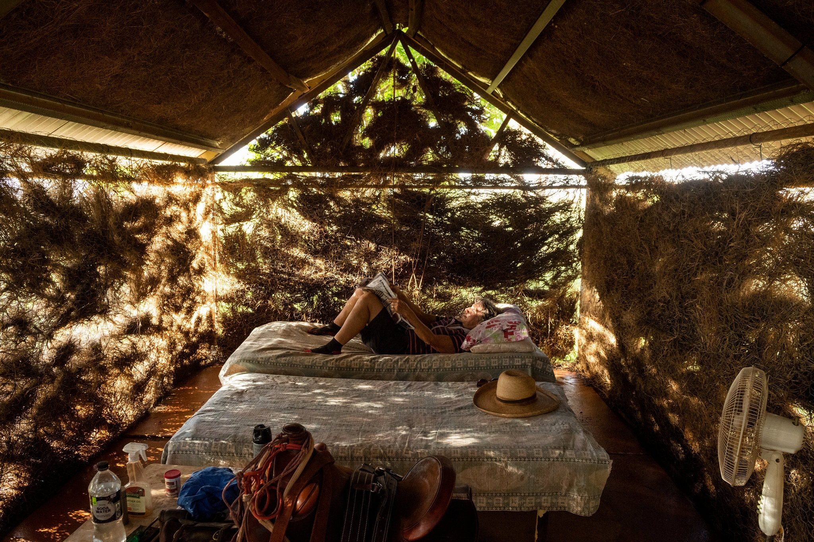
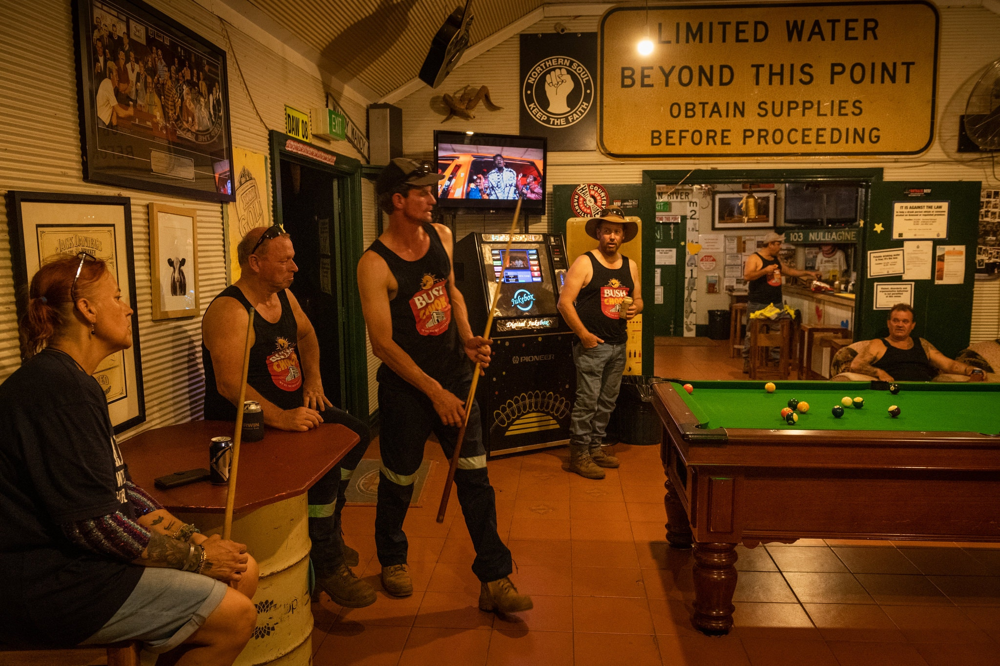
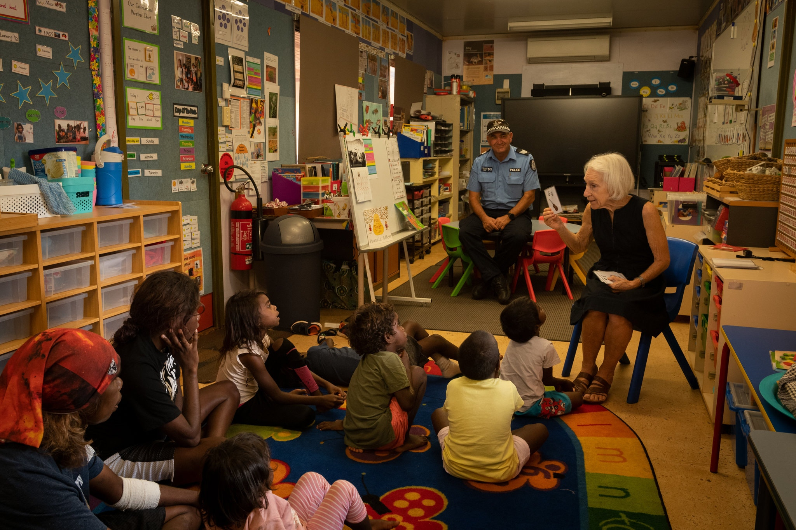
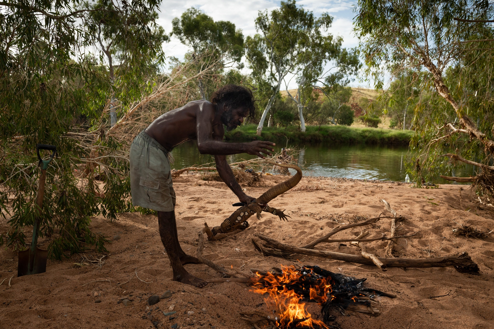
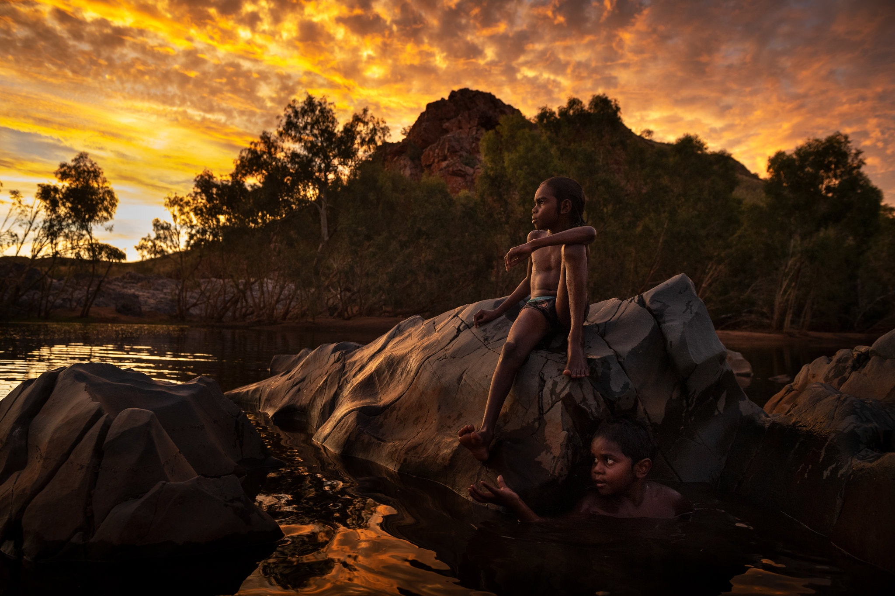

If
You're
Not
Sweating'
in
This
Town,
There's
Something
Wrong.

Ann Coppin reading a newspaper in her bush hut, where she goes to escape the heat.

The Iron Clad Hotel, the only pub in town, is a popular resting place for long-distance truckers. There is no air-conditioning.

A school in the Warralong community. The police officer is visiting to help build community relationships.

Desmond Gardner cooking a goanna, a native Australian lizard that he hunted earlier, in a bush oven, which is made from hot coals, sand, bark and leaves.

Cameron Whalebone, left, and Nathaniel Corbett swimming in Marble Bar last month.
By Livia Albeck-Ripka
Photographs by Matthew Abbott
MARBLE BAR, Australia — As the sun started to rise in Marble Bar, the temperature was already nudging 90 degrees: cool, by local standards.
The remote desert outpost, where the temperature soars above 95 degrees Fahrenheit for an average of 200 days a year, calls itself the “hottest town in Australia,” as it swelters through heat waves hotter and longer than anywhere else on the searing continent.
Local residents, or at least the most acclimatized ones, embrace the title. It draws offbeat tourists to the town of fewer than 200 people, a dusty strip where the burning earth can melt the soles of shoes and the water running from the “cold” tap comes out hot.
While other Australian towns have hit higher peak temperatures, it’s the ceaseless, stifling heat that has made Marble Bar notorious. By the end of the Southern Hemisphere summer, the town had broken its own record, with the thermometer hitting at least 113 degrees on 32 days.
On the most scorching mornings, heading outside can feel “like standing in front of a roaring wood stove,” said Brian Higgins, the local nurse. As the days’ hours tick on and the heat increases, he added, it begins to feel as if you have walked into the oven itself.
Being able to bear such heat is a point of local pride.
Mr. Higgins was sipping a beer in the town’s only pub, a corrugated iron shack built in the late 1800s, which has no air-conditioning.
“We have fan-conditioning,” said Cheryl Manurung, the pub’s manager, as she retrieved a cool beer from the fridge.
In Melbourne or Sydney, students might be released early from school, and people might be permitted to work from home, in extreme weather conditions.
“If we did that, we’d work three days a year,” joked Amy Pfitzner, a coordinator at the Marble Bar Community Resource Center.
But with Australia’s temperatures rising even higher as a result of climate change — and, by some accounts, warming even faster than the rest of the world — it is possible that not even Marble Bar’s hardiest residents will be able to withstand what may be coming.
By the end of the century, Marble Bar, about a thousand miles northeast of Perth in Western Australia, could be an average of 3 to 4.5 degrees Celsius warmer, according to figures from the Bureau of Meteorology and the Commonwealth Scientific and Industrial Research Organization.
“People don’t talk about it because they really don’t want to know if they’re going to fry or not,” Louise Mawson, a local government worker, said of climate change.
It’s a divisive issue in Marble Bar, whose population is largely made up of civil servants, teachers, retirees and prospectors drawn to town by the promise of gold, not all of whom accept the science that the earth, and their town, are warming.
It “could be ugly,” Ms. Mawson added of what the future holds. “There’s got to be a point where you actually start to cook.”
Across Australia, people are beginning to grapple with their identity as citizens of a country where climate change is unleashing its wrath in the form of unpredictable and ferocious disasters, from flood to drought to the catastrophic bush fires in the country’s east this summer, which razed thousands of homes and destroyed more than a billion animals.
While Marble Bar’s brutal conditions represent the current global extreme, the town may offer a glimpse of a new normal for a lot more places as the world grows hotter and not even the cover of night any longer offers a reprieve.
Much of the world may need to learn the rules that come with surviving sizzling conditions, rules the people of Marble Bar already know by heart. Always stay hydrated, keep out of the sun in the hottest hours and never, ever, travel more than 10 minutes by car without water to last days in case of a breakdown.
On a February morning, Alex Dorrington, a parks and gardens worker, was among the few brave enough (and prepared enough) to be outside on the town’s main street in the blazing heat.
He was taking a break in the shade of a tree from his 10-hour shift mowing the town’s grass. His body was covered head-to-toe with a straw hat, a bandanna swaddling his neck, long pants and heavy work boots. He tries to take a gulp of water every 15 minutes.
But even with these precautions, he has still suffered heat stroke before and knew well one of its symptoms. “If you’re not sweating,” Mr. Dorrington said, “there’s something wrong.”
Less prepared to withstand the furnace are the tourists, who come to experience the awesome heat and the boundless red earth desert stretching beyond the town.
“They come here in stiletto heels with a 500-milliliter bottle of water, and I think: You’re going to die,” Ms. Mawson said.
And they have died, if not in town, then not far away by the standards of this part of Australia. In 2003, a British tourist perished 230 miles from Marble Bar after his vehicle became bogged down and he left it to look for help. In a period of just two months in 2018, four others died in the Western Australian Outback’s fiery conditions.
While the tourists come only to briefly satisfy their curiosity, some people move to Marble Bar intending to stay, but find they can’t handle the heat.
“I’ve seen a lot of people in the five years I’ve been here come and go,” Pat Clarke, the groundskeeper at the local trailer park, said as he turned on the sprinklers one morning.
“No one really stays that long,” he added. “I’m surprised I’m still here.”
But for some longtime residents, Marble Bar is an isolated Eden, where cyclones bring fresh water to the desert’s swimming holes and gold remains abundant underground.
“It’s paradise,” said Daniele Specogna, a 72-year-old former photographer and goldsmith from Italy who was lured to the Australian desert two decades ago.
“Nature here is untouched,” he added, though he conceded he would find it difficult to survive in Marble Bar without air-conditioning.
In the nearby Indigenous communities of Goodabinya and Warralong, air-conditioning is considered a luxury that residents often limit to using at night.
During the day, people stay in the shade, or cool off under the sprinklers, said Jeannice Walker, sitting on her porch in Goodabinya, where friends played cards with children in their laps. When the heat isn’t too unbearable, they go hunting for local bush foods, like goannas and kangaroos.
“Sometimes it’s very hard for people,” Ms. Walker said, adding that her family could not always afford the power needed to run their air-conditioning and that they had to wet their clothing to stay cool.
But no matter how unrelenting the desert heat might become in the future, Ms. Walker said her family and community would never leave. “This is our home,” she said, “our mother’s country.”
Some find the best way to cope with the extreme heat is by working underground.
Some 165 feet below the surface of Marble Bar, the temperature was a cool 80 degrees. Here, Murray Millwood has built and runs his own gold mine. Unlike his wife, Elaine, who operates the winch from above, he said he had never experienced the full wrath of Marble Bar’s summer when working in these depths.
Underground, “time goes quick,” said Mr. Millwood, 77, placing his palm on the limestone, where cool water trickled down from the aquifer. “There’s no sun to torment you.”